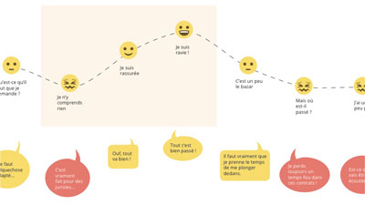
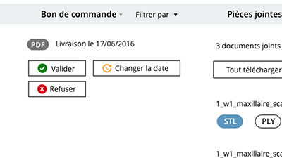
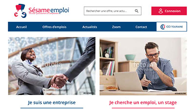

Ce que je fais
De sites internets publics aux applications métiers, en passant par la réalisation d’IHM ou d’applications mobiles, je suis disponible pour vous guider dans le processus de recherche, conception et réalisation de votre interface.
Si vous avez des questions, n’hésitez pas à me contacter pour que nous en discutions.
NB: Certaines de mes réalisations sont soumises à confidentialité et ne peuvent être diffusées en ligne.
-

Lexigone
UX Design · Expérience Map
Comment se déroule le processus de gestion d'un contrat ?
UI Design
UI pour User Interface, c'est à dire que je conçois des interfaces utiles et utilisables pour les utilisateurs, en portant une attention particulière à l'aspect ergonomique de ce que je réalise.
-

Condor
UI Design · Refonte Responsive
Adapter la version mobile d'une application métier
-

Sésame Emploi
UI Design · Refonte Responsive
Proposer une meilleure ergonomie lors du passage en responsive
-

Aperoweb Assistants vocaux
-

MiamOpenSud · 2017
-

Moustic 2017
En voir plus
Mais encore…
-
Dico Digital
Wireframe & Maquette Responsive
Dictionnaire pour ceux qui disent digital au lieu de numérique